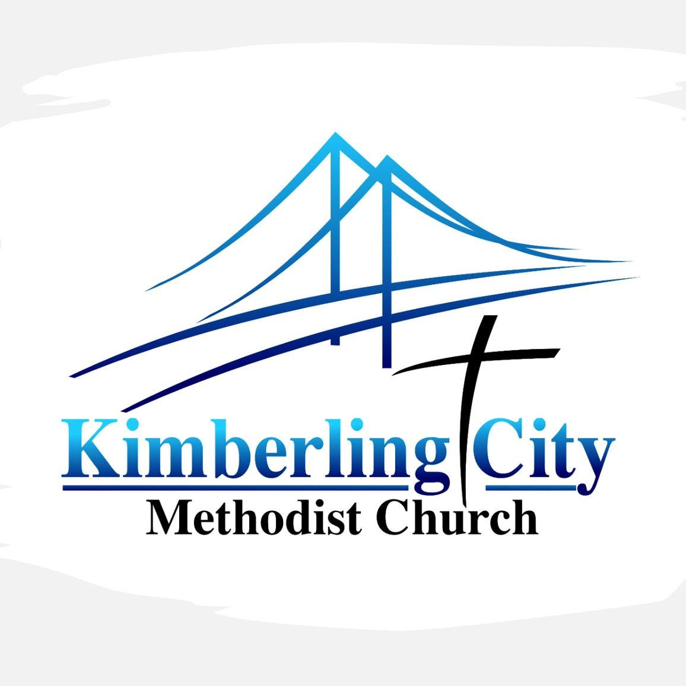

Kimberling City Methodist Church
Welcome home.
Come as you are. Find your place in worship and community.
8:00 AM • 9:15 AM • 10:30 AM
DESIGN CONCEPT — FOR REVIEW; LINKS ARE EXAMPLES

Come as you are. Find your place in worship and community.
8:00 AM • 9:15 AM • 10:30 AM